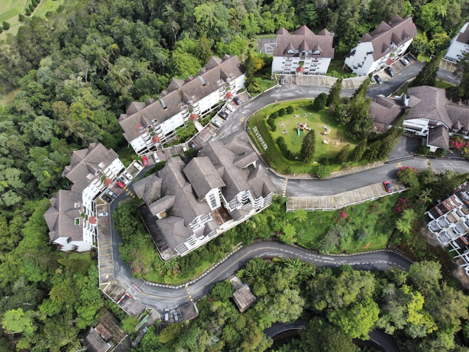

Harga Permohonan Meter TNB 2026 Seluruh Malaysia
Jadual harga terkini untuk semua jenis permohonan — deposit, CSP, stamp dan caj kontraktor. Lengkap untuk domestik dan komersil.
Panduan, tip dan maklumat tentang permohonan meter TNB dan bekalan elektrik untuk rumah dan perniagaan anda.

Jadual harga terkini untuk semua jenis permohonan — deposit, CSP, stamp dan caj kontraktor. Lengkap untuk domestik dan komersil.

Beli atau sewa rumah tapi tak ada meter? Panduan lengkap 3 cara mohon semula meter — termasuk jadual harga deposit mengikut jenis premis.
Panduan langkah demi langkah mohon meter secara online tanpa melalui kontraktor — untuk premis yang pernah ada meter.

Bila dan kenapa perlu upgrade bekalan 1 fasa ke 3 fasa? Tanda-tanda rumah anda perlukan 3 fasa, kos dan proses lengkap.
Beli atau sewa rumah yang masih ada meter atas nama lain? Ini panduan tukar nama, dokumen yang perlu dan caj terlibat.

Nak berpindah atau jual rumah? Ini cara tutup akaun TNB dan dapatkan semula deposit meter yang pernah dibayar.
WhatsApp kami sekarang. Kami semak keadaan premis anda dan beritahu langkah seterusnya — percuma, tiada ikatan.